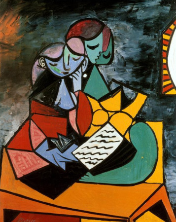
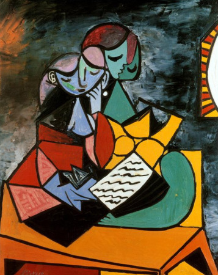
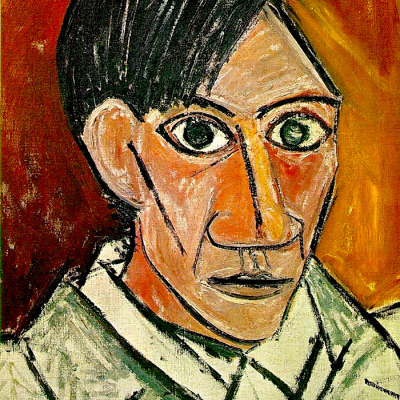
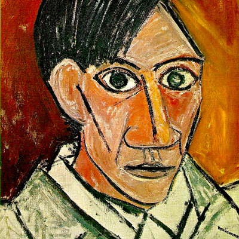

Pablo Picasso
Pablo Ruiz Picasso (Málaga, 25 de octubre de 1881-Mougins, 8 de abril de 1973) fue un pintor y escultor español, creador, junto con Georges Braque, del cubismo.
Es considerado desde la génesis del siglo XX como uno de los mayores pintores que participaron en muchos movimientos artísticos que se propagaron por el mundo y ejercieron una gran influencia en otros grandes artistas de su tiempo. Sus trabajos están presentes en museos y colecciones de toda Europa y del mundo. Además, abordó otros géneros como el dibujo, el grabado, la ilustración de libros, la escultura, la cerámica y el diseño de escenografía y vestuario para montajes teatrales. También tiene una breve obra literaria.
En lo político, Picasso se declaraba pacifista y comunista. Fue miembro del Partido Comunista de España y del Partido Comunista Francés hasta su muerte, acaecida el 8 de abril de 1973 a los noventa y un años de edad, en su casa llamada «Notre-Dame-de-Vie» de la localidad francesa de Mougins. Está enterrado en el parque del castillo de Vauvenargues (Bouches-du-Rhone). 

 
